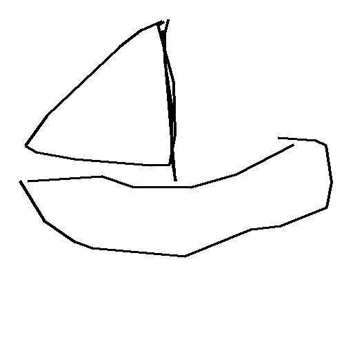

Sailboat coming alongside.
9 integrated keys · 145 rendered frames · 24 fps · 6.042 seconds
ASSEMBLED REVIEW COPY · MOTION UNAPPROVED
Independent still review: original drawing identity passes; source framing/pose needs repair. Source pose: the prominent source sail spreads to both sides of the mast, whereas the rendered sail ends at the mast. In pairs 01 through 06 this omits a large right-hand part of the source silhouette and makes the boat read as a narrow single-sided sail rather than the source barge. The approach, hull placement, growth, and late frame exit otherwise track the source convincingly. The original QuickDraw identity remains legible in the triangular sail, doubled irregular mast, angular open-top hull, and unpolished thin contour. Normal-speed motion approval remains unrun. Three-round limit reached; remaining gap retained. Filled boat/SAM fit fails: mean 0.611 against bar 0.65, minimum 0.547 against bar 0.45.
One real four-stroke sailboat approaches with its single sail left of an upright mast. The source has an additional right-hand jib that this doodle does not represent. A single distant-vessel plate follows measured screen drift; trailing dinghy is drawn by agent. No invented sail flutter.
The source and its keys
Key 1 · source 3.000 s · frame 0
Whole barge approaches with mast and gaff below the top edge.Key 2 · source 4.000 s · frame 24
Approach enlarges the sail and raises its peak.Key 3 · source 5.000 s · frame 48
Mast has crossed the upper crop; hull remains in view.Key 4 · source 5.500 s · frame 60
Camera begins its faster rightward follow; far vessels slide left.Key 5 · source 6.000 s · frame 72
Gaff sail head enters the upper crop; left foot continues left.Key 6 · source 6.500 s · frame 84
Top crop deepens while the near hull grows.Key 7 · source 7.500 s · frame 108
Camera follow settles; the near bow turns farther right.Key 8 · source 8.000 s · frame 120
The sail and bow reach the right crop.Key 9 · source 9.000 s · frame 144
Final retained moment: sail and bow cropped, trailing dinghy still visible.Source, doodle and checks
One real Quick, Draw! sailboat, key 5193394433294336, retains its four source strokes and point correspondence. Quick, Draw! contributors / Google Creative Lab, CC BY 4.0. Far vessels, water contours and the trailing dinghy were drawn by agent from source observations. Reflected ink is an approximation.

Archive: Dordrecht (1926). Retained clip-relative 3–9 s; reported public domain, as recorded by the archive. A title card and later cut are outside this interval.
PASS: trace recall 0.9833 / bar 0.98; parts kept 1.000.
FAIL: filled native boat / SAM IoU mean 0.611, min 0.547; bars 0.65 / 0.45. Partial SAM target is not ground truth.
Recognition/classifier and normal-speed independent playback are unrun. No planted intervals were independently observed; the minimum-four foot-contact gate is not passed. No training ran.
Editable timeline and strokes · Source record · Source contact sheet · Checks · Independent still review · Character traces · Native stroke correspondence · SAM audit · Mask provenance